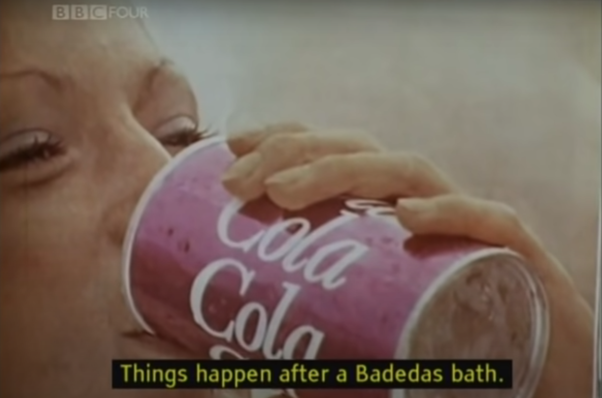

It was interesting to watch “Ways of Seeing” again because I felt that I was experiencing it through a different lens than before. "Ways of Seeing" is a BBC docuseries that aired almost 50 years ago.
The first time that I watched “Ways of Seeing” was for my Still and Moving Images class last year. At the time I had watched the four episodes within the context of evolution in the way things are portrayed. So I hadn’t noted much of the social and moral implications that were highlighted by the episodes. I saw it much more as a chronological history of how we have portrayed ourselves as media and for media. The foci of the documentary were the European oil paintings and the people of Europe so I felt that I couldn't relate on a deeper thematic level.
This time around it was a lot different. Watching how the Europeans were incredibly vain and selfish and extravagant reminded me of our current social ideation. The paintings were painted for the primary purpose of showcasing the riches of the subject of the painting. In the image below you can see two men in luxurious clothing and furs. And the background is full of their expensive wordly posessions. This made me think about people today on social media. To some, it is a lifelong project to create this idealized version of yourself online that looks happy, rich, and successful. It is essentially a modern day equivalent of getting an oil painting of yourself.

Watching how women were portrayed in oil paintings at the time looks a lot like the way misogynists, like our president, see women today. The documentary focused in on the fetishization of women in paintings and throughout most of history. A majority of paintings portray women as subservient and existing solely for pleasure and service to a man. They sometimes appear to be looking longingly at the viewer of the painting. Today it is unfortunate that there are men that still exist, like our lovely orange president, that believe women are below men or that they are meant to be faithful wives or whatever other wildly outdated/ignorant notion. But I bring that up because these men have very similar morals as the men in 1800's Europe.
Watching the part in the last episode where they flip through a magazine, on one page are ads for coca-cola and on the next page are pictures of gaunt, starving refugees. It highlights the us versus them mentality instilled in us by publicity. The pictures of the Coca Cola make us desire material goods in order to "improve" our lives. The pictures of the refugees inserted in the middle of ads for luxury goods causes us to feel distnaced from that reality. This parallels closely with the divide we see today between the working class and the upper class; the rich are getting richer and the poor are getting poorer because people STILL are ignoring issues if they aren’t directly impacted by them.
This time around I was able to take deeper thematic meaning from The Ways of Seeing because of the juxtaposition against the world we are living in right now. The first time I watched it I was unable to glean a deeper thematic lesson because I was taking the docuseries too literally. When I widened my perspective and connected it to my own life and my current life expereiences I was able to understand why this docuseries is still being shown today.
Links to "Ways of Seeing" Episodes